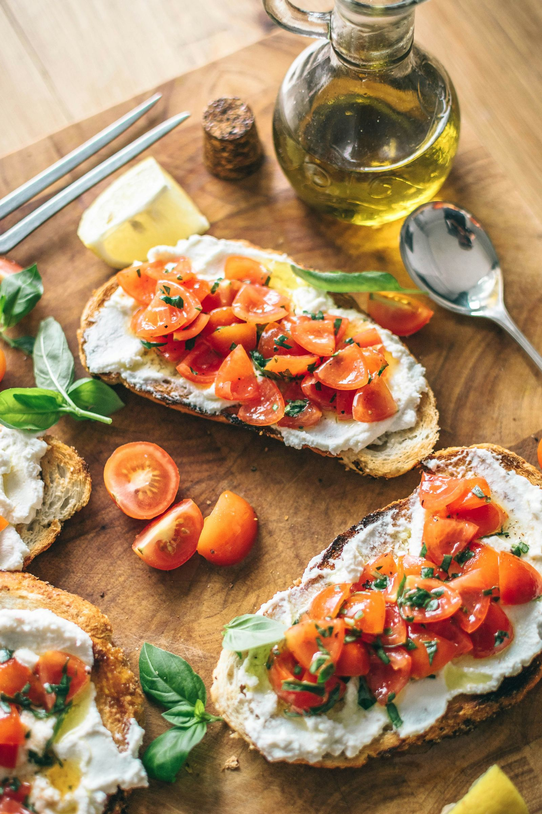

Discover the secrets of Italian cuisine and why it's loved worldwide. Explore regional traditions, ingredient quality, and the art of conviviality at the table.
Scopri i segreti della cucina italiana e perché è amata in tutto il mondo. Esplora le tradizioni regionali, la qualità degli ingredienti e l'arte della convivialità a tavola.
Il cibo italiano è famoso in tutto il mondo per la sua qualità, la sua tradizione e il suo sapore irresistibile. Ma quali sono i motivi dietro a questa fama? Scopriamolo insieme!
Innanzitutto, la cucina italiana si distingue per l'uso di ingredienti di altissima qualità, come pomodori succulenti, olio d'oliva pregiato e formaggi artigianali. Questi ingredienti, combinati con una preparazione semplice ma sapiente, creano piatti che esaltano i sapori genuini.

Inoltre, la cucina italiana è ricca di tradizioni culinarie radicate nella storia e differenziate regionalmente, offrendo una vasta varietà di piatti in grado di soddisfare ogni gusto. Dalle montagne del Nord alle spiagge del Sud, ogni regione d'Italia ha i suoi piatti tipici da offrire.
Ma c'è di più: il cibo italiano va oltre il semplice nutrimento. È un'esperienza condivisa, che porta le persone a riunirsi intorno alla tavola per gustare e apprezzare la vita insieme. Questa convivialità è parte integrante della cultura italiana e rende ogni pasto un momento speciale da condividere con gli altri.
Infine, il cibo italiano è sinonimo di eccellenza, grazie alla sua produzione agroalimentare e vinicola di alta qualità. Con marchi come DOP e IGP, l'Italia garantisce la provenienza e la qualità dei suoi prodotti, rendendo il "Made in Italy" un marchio di prestigio in tutto il mondo.
Il cibo italiano conquista i cuori e i palati di milioni di persone grazie alla sua qualità, tradizione, convivialità e eccellenza. Che tu sia un amante della pasta, della pizza o dei formaggi, c'è sempre qualcosa di delizioso da scoprire nella cucina italiana!

fonte: 5 motivi per cui il cibo italiano è il migliore e il più amato al mondo.
Parole chiave
| Segreti | Informazioni non condivise con tutti. |
| Cucina | Il luogo dove si preparano i cibi. |
| Italiana | Qualcosa che riguarda l'Italia o le sue tradizioni. |
| Amata | Qualcosa che piace molto alle persone. |
| Esplora | Scoprire o investigare qualcosa. |
| Tradizioni | Abitudini culturali o pratiche tramandate nel tempo. |
| Regionali | Qualcosa che riguarda una specifica regione geografica. |
| Qualità | Caratteristica di essere di alto standard. |
| Ingredienti | Gli elementi necessari per preparare un piatto. |
| Arte | Un'attività che richiede abilità e creatività. |
| Convivialità | L'atto di stare insieme in modo cordiale e socievole. |
| Tavola | Il luogo dove si mangia o ci si riunisce per consumare cibo. |
Esercizio
Domande
- Perché la cucina italiana è considerata la migliore al mondo?
- Quali sono alcuni esempi di ingredienti di alta qualità utilizzati nella cucina italiana?
- Qual è l'importanza della convivialità nella cultura italiana legata al cibo?
- Cosa significa "Made in Italy" quando si parla di cibo e qual è il suo valore?
- Quali sono alcuni esempi di tradizioni culinarie italiane menzionate nel testo e da quale regione provengono?